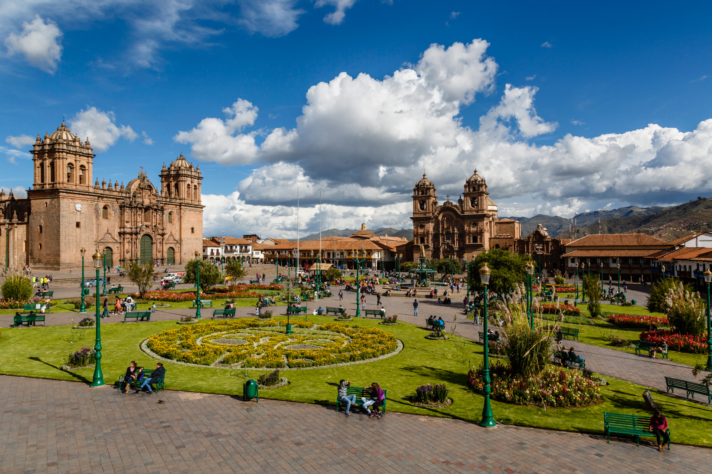
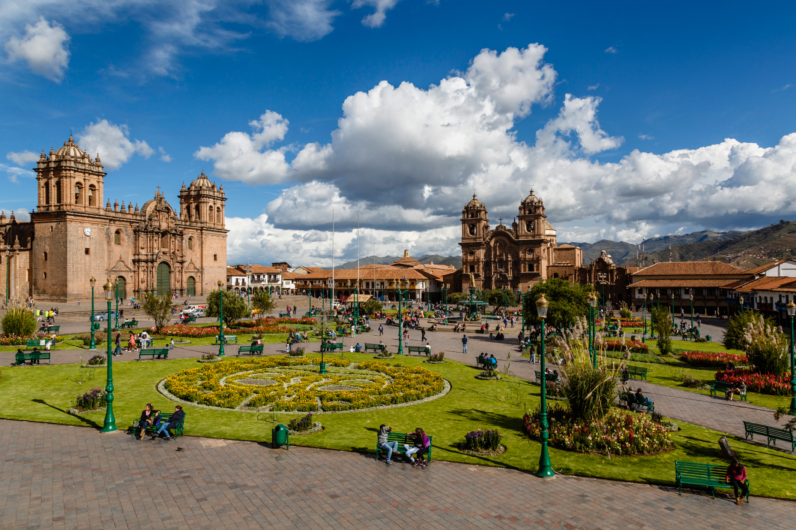
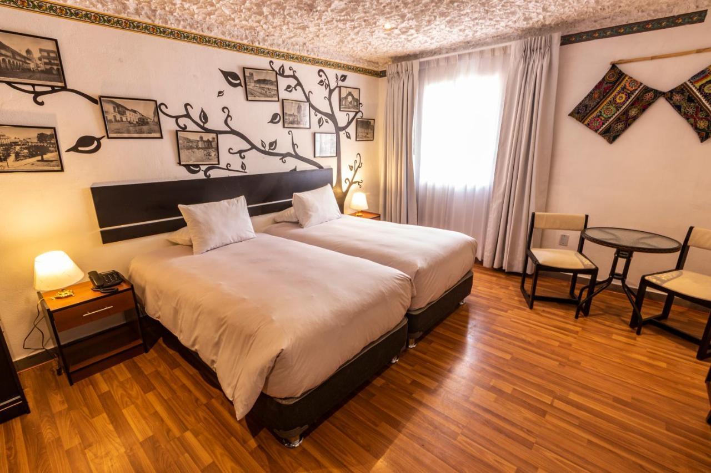
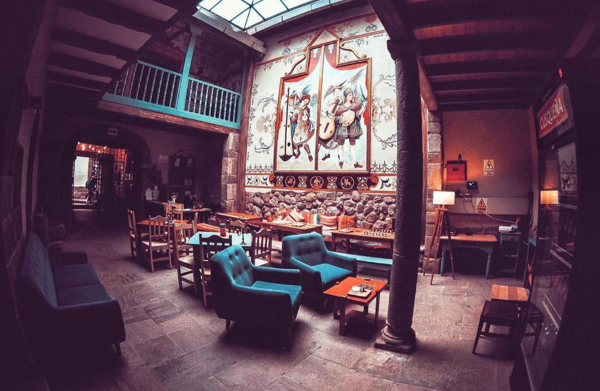

Machu Picchu
 


Plongez dans l'essence mystique des Andes péruviennes avec nos voyages au Machu Picchu. Nous offrons une variété de formules adaptées à tous les explorateurs en quête de découvertes inoubliables. Nos formules flexibles sont conçues pour vous immerger dans cette merveille archéologique, que vous souhaitiez une visite éclair d'une journée ou une expérience plus approfondie sur plusieurs jours. Explorez la citadelle inca légendaire, ses temples ancestraux et ses vues panoramiques époustouflantes. Optez pour cette déstination inoubliable, avec des visites guidées complètes et des temps libres pour explorer à votre rythme. Et admirer les paysages de toute beauté que cette merveille du monde peux vous offrir. De quoi passer de bonnes vacances en famille.
Formules
Formule 1
Day 1 : Arrivé Lima -> cusco
Day 2 : visite Cusco
Day 3 : Cusco -> vallée saacrée des incas
Day 4 : quartier libre.
Day 5 : Randonnée Machu Picchu.
Day 6 : Découverte des activités locals
Day 7 : Cusco -> Lima
Formule 2
Day 1 : Avion Paris -> Arrivé Lima -> cusco
Day 2 : visite Cusco
Day 3 : Escale -> Cusco -> vallée saacrée des incas
Day 4 : Vallée sacrée des incas -> Machu pichu pueblo
Day 5 : Machu pichu pueblo -> Randonnée Machu Picchu
Day 6 : retour Cusco
Day 7 : repos (quartier libre)
Day 8 : Escale -> Laguna muyna et Laguna Waton -> Lago Titicaca (nuit)
Day 9 : Lago Titicaca -> visit -> retour nuit cusco
Day 10 : Quartier libre
Day 11 : Découverte des activités locales
Day 12 : quitte cusco -> arret ayacucho -> Lima -> avion to paris
| Image de l'hôtel | Description | Étoiles |
|---|---|---|
|  |
Nom: Capac Rimacpampa Lieu: Limacpampa Chico 493, Cusco City Centre, Cusco, Pérou Description: L’établissement Capac Rimacpampa se situe dans le centre de Cusco, à respectivement 1,6 km et 500 mètres de ces lieux d’intérêt : Gare de Wanchaq et Religious Art Museum. Vous séjournerez à proximité de ces lieux d’intérêt prisés : Santo Domingo Church, Church of the Company et Holy Family Church. Cet établissement non-fumeurs vous accueille à 500 mètres de : Twelve Angled Stone. Prix par nuit: 40€ Pour plus d'info |
Note :8.1/10 |
 |
Nom:AITANA'S HOUSE - SAN BLAs Lieu: Choqechaka, Cusco City Centre, Cusco, Pérou Description: Proposant un jardin et une connexion Wi-Fi gratuite, l’établissement AITANA'S HOUSE - SAN BLAs se situe dans le centre de Cusco, près de ces lieux d’intérêt : Gare de Wanchaq, Twelve Angled Stone et Religious Art Museum. Chaque hébergement est pourvu d’un patio avec vue sur la ville, d’une télévision à écran plat et d’un espace salon. Vous bénéficierez également d’une cuisine bien équipée, ainsi que d’une salle de bains privative comprenant une douche. Certains logements sont dotés d’une terrasse et/ou d’un balcon avec une vue sur la montagne ou le jardin. Prix par nuit: 49€ Pour plus d'info |
9.1/10 |
|  |
Nom:Nao Victoria Hostel Lieu: Calle Procuradores, 357, Cusco City Centre, Cusco, Pérou Description: L’établissement Nao Victoria Hostel se trouve à Cusco,
à 3 km de ce lieu d’intérêt : Gare de Wanchaq. Il propose un service de concierge, un restaurant, un bar, des hébergements non-fumeurs, ainsi qu'une connexion Wi-Fi gratuite dans l’ensemble de ses locaux.
Cet hôtel 3 étoiles propose un service d'étage et une réception ouverte 24h/24.
Vous pourrez prendre un verre au snack-bar sur place. Prix par nuit: 55€ Pour plus d'info |
9.3/10 |